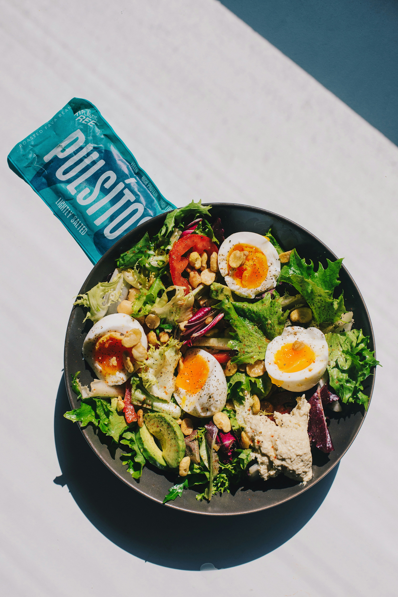

About This Recipe
Egg salad is a simple and delicious dish made with boiled eggs, mayonnaise, and fresh seasonings. It is perfect for lunch, sandwiches, or a light meal. This easy recipe brings together creamy texture and fresh flavors.
Preparation
10 minutes
Cooking
10 minutes
Servings
2 people
Ingredients
Prepare these ingredients before you start cooking:
- 4 large eggs
- 3 tablespoons mayonnaise
- 1 teaspoon mustard (optional)
- 2 tablespoons finely chopped onion
- 1 tablespoon chopped fresh parsley
- Salt to taste
- Black pepper to taste
- Lettuce leaves for serving (optional)
Step-by-Step Instructions
- Boil the eggs: Place the eggs in a saucepan, cover them with water, and bring the water to a boil. Cook until the eggs are fully hard-boiled.
- Cool the eggs: Transfer the cooked eggs to cold water and allow them to cool before peeling.
- Peel and chop: Remove the shells and chop the eggs into small pieces.
- Prepare the dressing: In a bowl, mix the mayonnaise, mustard, chopped onion, salt, and black pepper.
- Combine the ingredients: Add the chopped eggs and parsley to the dressing. Mix gently until everything is combined.
- Chill the salad: Refrigerate the salad briefly to let the flavors combine. Keep it refrigerated until serving.
- Serve and enjoy: Serve your egg salad on fresh lettuce or use it as a filling for sandwiches.
Helpful Tips
- Allow the eggs to cool before mixing them with mayonnaise.
- Add a little lemon juice for a fresh flavor.
- Keep the egg salad refrigerated and do not leave it at room temperature for more than two hours.